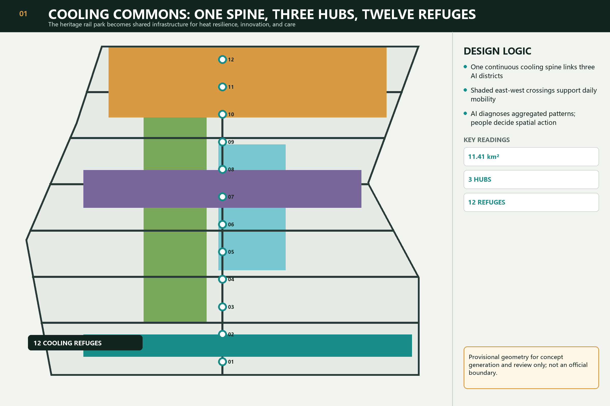
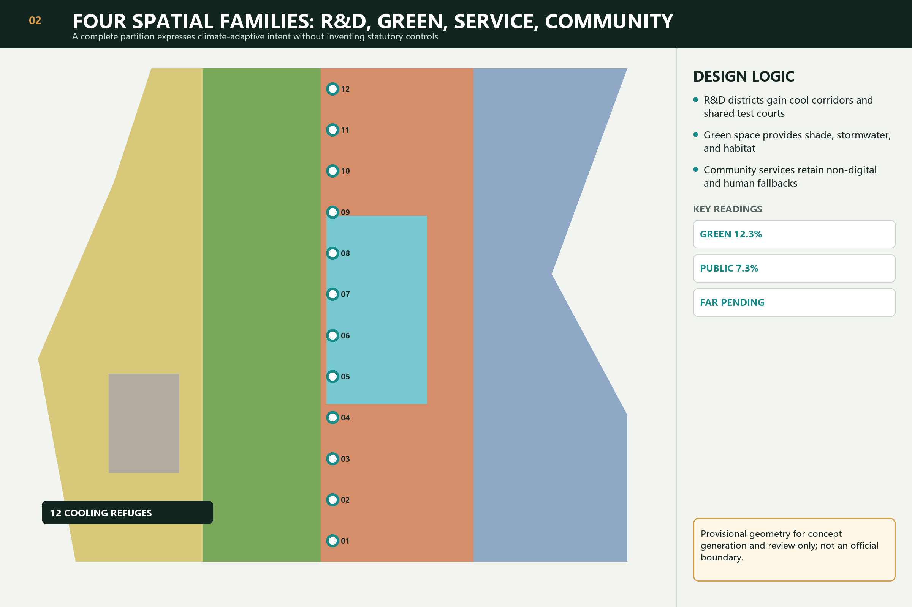
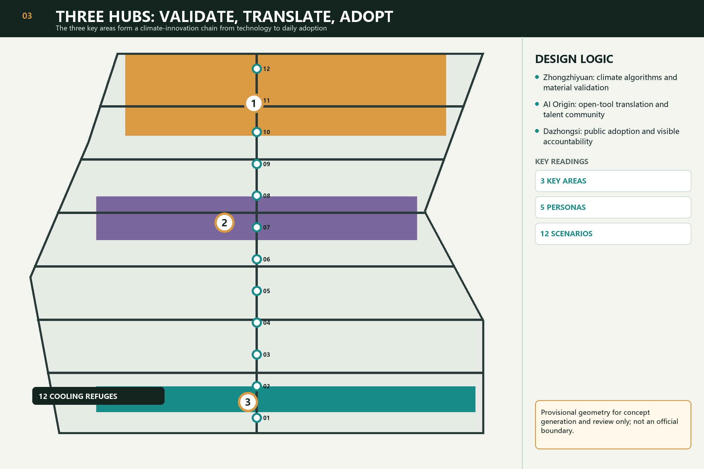
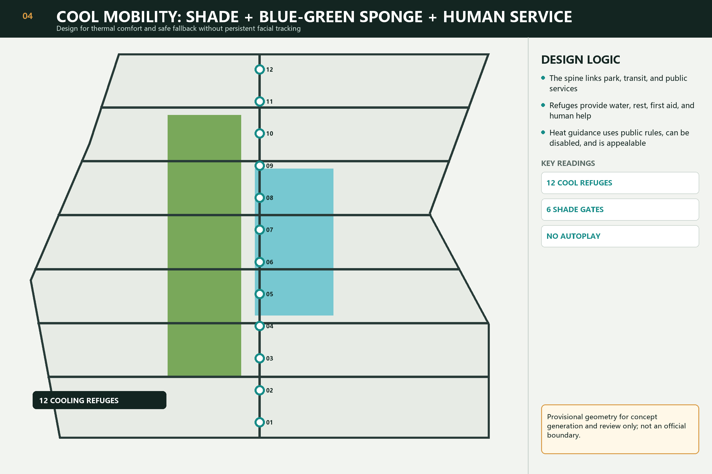
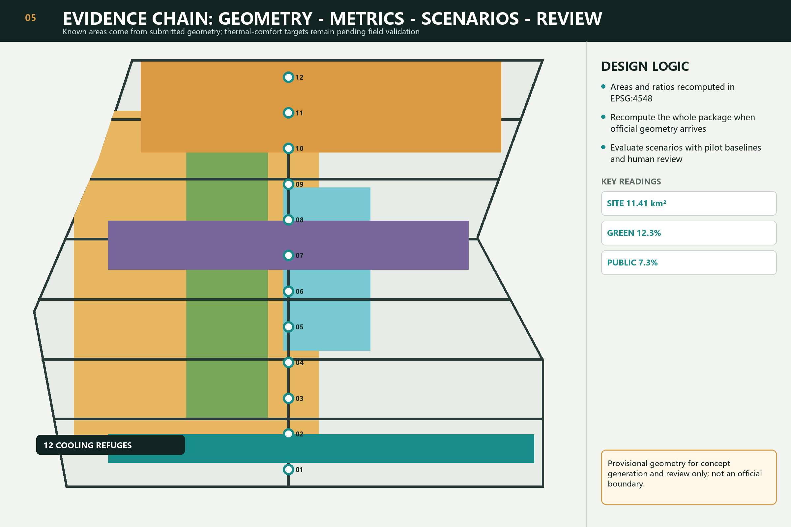

Overview

Spatial structure

Three hubs

Cool mobility

Evidence chain

Overview map and three-level scope
The overall boundary, key areas, and provisional status are cross-reviewable through figures and GeoJSON.
Key areas
The three hubs validate, translate, and adopt.
Land use, mobility, blue-green public space, and buildings
Four complete land-use families, the cooling spine, blue-green space, and conceptual footprints express the structure.
Renewal projects and AI scenarios
Six project families and twelve scenarios require human review and non-digital fallback.
Core metrics
site area · green ratio · public-space ratio
Task coverage and self-check status
Structured matrices and self_check.json record the six Agent tasks and four review gates.
Sources and assumptions
sources.json records provenance; assumptions.json records provisional geometry, field-baseline, and statutory-control gaps.